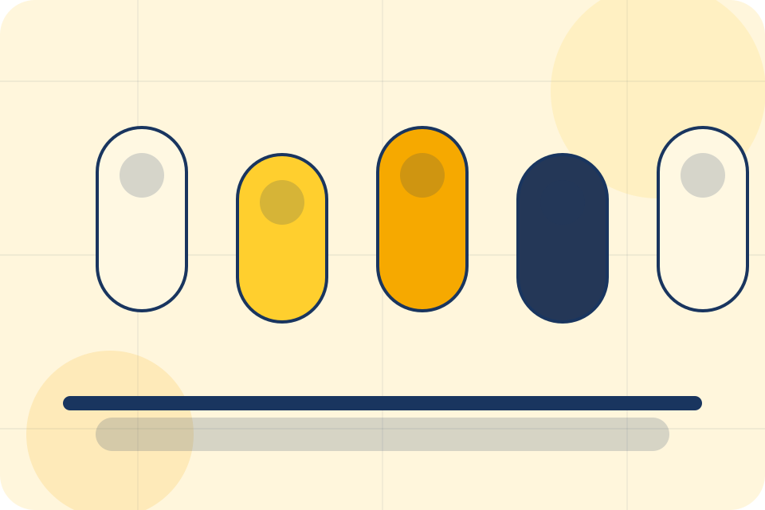
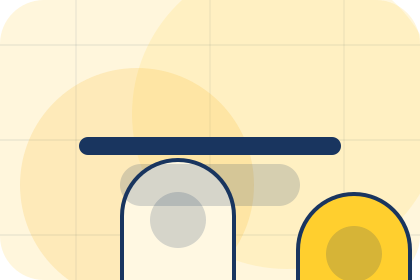
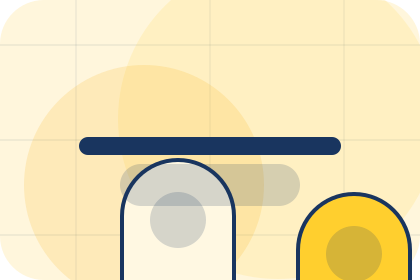
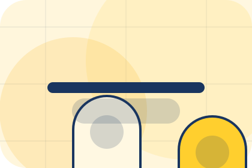
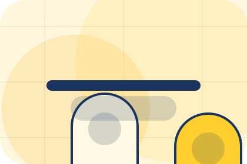
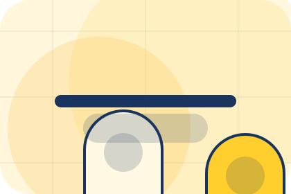
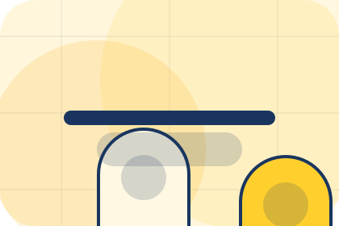
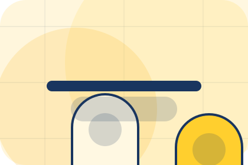
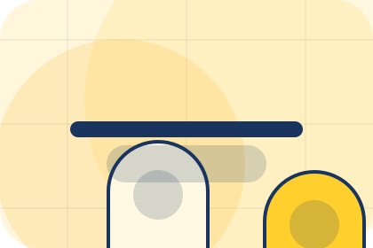
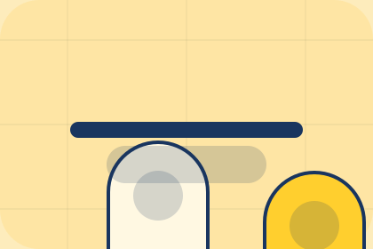

Questions / 01
Questions by Luma
Questions shaped for wellness, personal care & lifestyle services decisions.
Questions opens as a clear wellness decision hub: what Luma offers, who it helps, why it matters, and which route to take first.
The first screen combines positioning, proof, primary action, and fast internal navigation, so people can act immediately or compare the rest of the questions route with context.
Clear intakeHuman follow-upPractical reassurance
Product routine hero
Choose a starting profile
Select the closest route and Luma keeps the next step, proof, and follow-up expectation aligned with personal improvement and reassurance.

Questions / 02
Suitability
Suitability handles buying doubts directly so visitors can understand timing, fit, limits, and the safest next step.
Answers are short by design: enough to remove hesitation, not so much that the page turns into documentation before the visitor can act.
Explore QuestionsLuma structures suitability around question, answer, and a clear next route so visitors can compare the block quickly before they book a consultation.
Book ConsultationQuestions / 03
Preparation
Preparation handles buying doubts directly so visitors can understand timing, fit, limits, and the safest next step.
Answers are short by design: enough to remove hesitation, not so much that the page turns into documentation before the visitor can act.
Explore Questions

Question
Preparation gives the page a specific angle instead of repeating the navigation label.
Questions / 04
Frequency
Frequency handles buying doubts directly so visitors can understand timing, fit, limits, and the safest next step.
Answers are short by design: enough to remove hesitation, not so much that the page turns into documentation before the visitor can act.
Explore QuestionsQuestion
Frequency gives the page a specific angle instead of repeating the navigation label.

Answer
The supplement capsule cards show what to compare, what to avoid, and what matters most for wellness, personal care & lifestyle services visitors.

Next Step
The final cue points to a useful internal route so the section keeps the journey moving.
Questions / 05
Products
Products explains the practical scope, best-fit situations, and expected outcome so wellness visitors can compare options without decoding jargon.
The section keeps the offer concrete: what is included, who it is best for, what decision it supports, and which linked route gives the deeper detail.
Explore QuestionsBest Fit
Who should use products and when it belongs in the questions journey.
Product routine hero
Choose a starting profile
Select the closest route and Luma keeps the next step, proof, and follow-up expectation aligned with personal improvement and reassurance.
Questions / 06
Safety
Safety handles buying doubts directly so visitors can understand timing, fit, limits, and the safest next step.
Answers are short by design: enough to remove hesitation, not so much that the page turns into documentation before the visitor can act.
Explore QuestionsQuestion
Safety gives the page a specific angle instead of repeating the navigation label.
Answer
The supplement capsule cards show what to compare, what to avoid, and what matters most for wellness, personal care & lifestyle services visitors.
Next Step
The final cue points to a useful internal route so the section keeps the journey moving.
Questions / 07
Payment
Payment makes commercial comparison easier by showing fit, scope, and terms before wellness visitors ask for the next step.
The layout keeps price-sensitive decisions honest: it separates starting scope, fuller delivery, and ongoing support so the visitor can ask a sharper question.
Explore QuestionsFit
Who the offer is for, which scope it suits, and when a different route may be better.
Scope
What is included clearly enough for wellness, personal care & lifestyle services visitors to compare value without hidden jargon.
Terms
The practical details that should be confirmed before someone asks to book a consultation.
Questions / 08
Cancellation
Cancellation handles buying doubts directly so visitors can understand timing, fit, limits, and the safest next step.
Answers are short by design: enough to remove hesitation, not so much that the page turns into documentation before the visitor can act.
Explore Questions

Question
Cancellation gives the page a specific angle instead of repeating the navigation label.
Questions / 09
Support
Support explains the practical scope, best-fit situations, and expected outcome so wellness visitors can compare options without decoding jargon.
The section keeps the offer concrete: what is included, who it is best for, what decision it supports, and which linked route gives the deeper detail.
Open ContactBest Fit
Who should use support and when it belongs in the questions journey.

What Changes
The practical benefit visitors should expect after choosing this route.

Deeper Route
Where to compare details, pricing, support, or contact options before committing.
Questions / 10
Book Consultation
Luma closes the questions route with a clear action, a quick reminder of the value, and a low-friction way to book a consultation.
Visitors who are ready can use the primary action. Visitors who are still comparing can scan the section links, proof, and support routes before they book a consultation.
Book ConsultationThe final block keeps the choice simple: act now, compare one more proof route, or send enough detail for a focused response.
Book Consultationpersonal improvement and reassurance
Book Consultation
A routine-first wellness shop with offer strip, product education, rounded capsules, and evidence-led reassurance. Questions ends with a direct path to book a consultation, plus enough context for visitors who still need to compare.

Book ConsultationNotes
Information is provided for planning and should be reviewed for the final client, location, and operating rules.